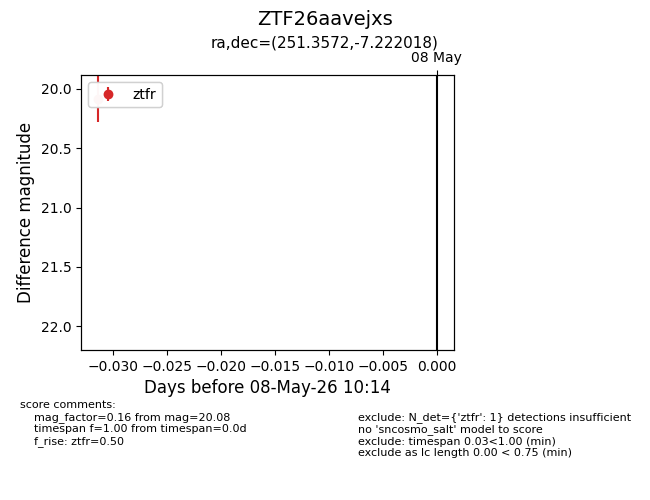
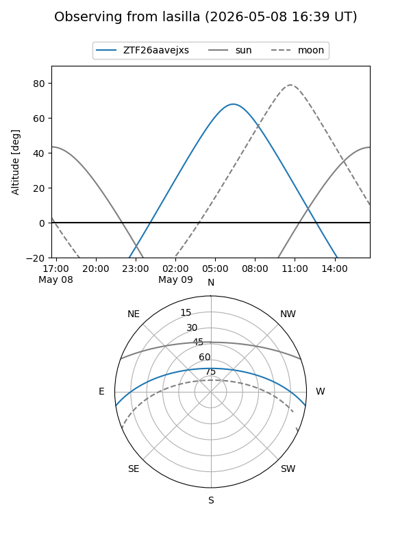
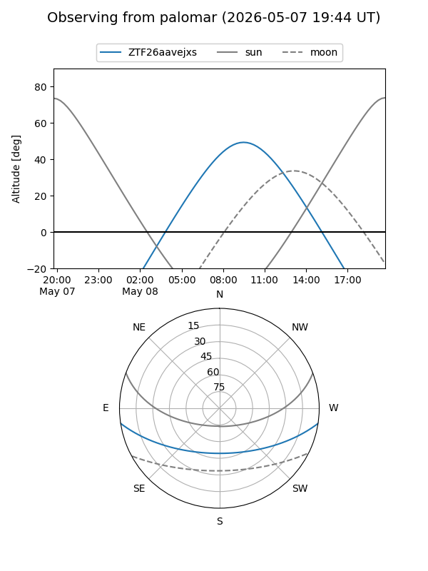

ZTF26aavejxs
Target ZTF26aavejxs at 2026-05-08 10:16
Aliases and brokers:
FINK: link
Lasair: link
ALeRCE: link
alt names
ZTF26aavejxs (ztf,fink_ztf)
Coordinates:
equatorial (ra, dec) = 251.3572,-7.22202
equatorial (HMS+DMS) = 16:45:25.72,-07:13:19.27
galactic (l, b) = (10.5537,+23.83067)
Flags:
Photometry:
last ztfr=20.08
1 ztfr detections
Lightcurve

Visibility


Additional plots